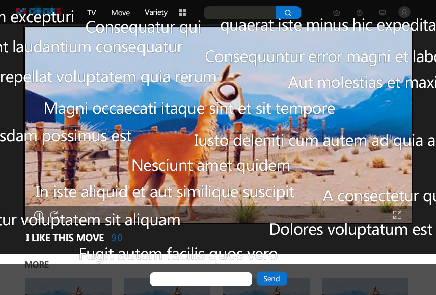
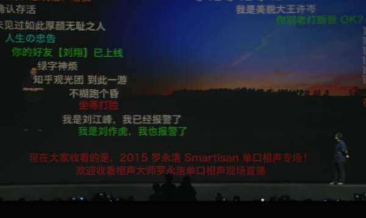
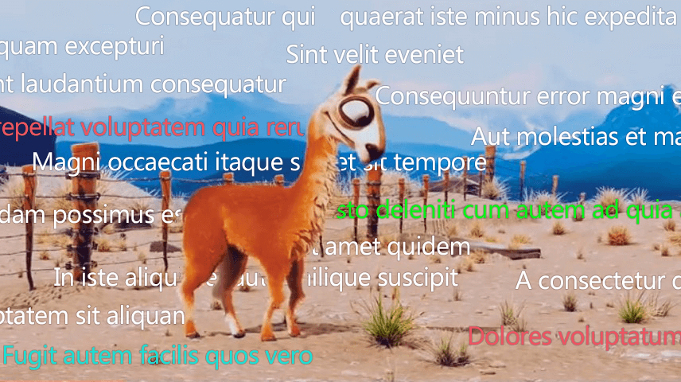
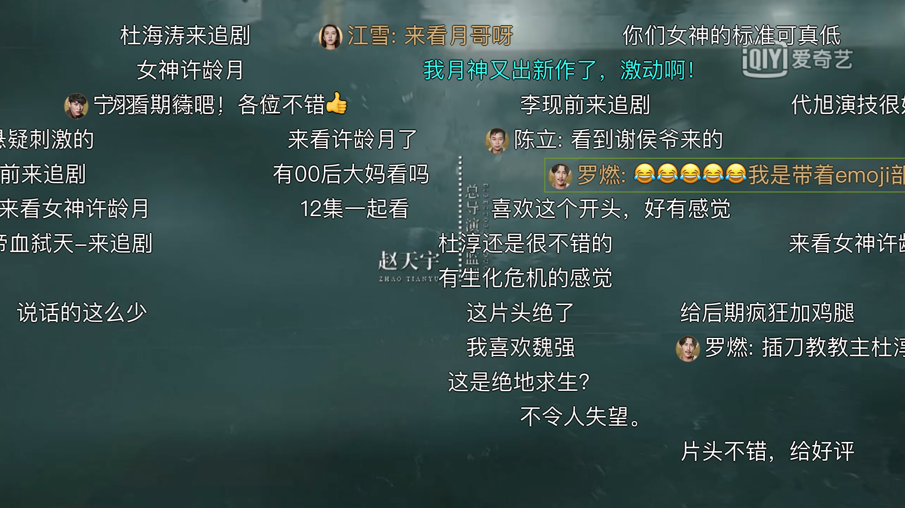

使用场景
本节主要描述弹幕的具体使用场景。
点播视频互动
在观看视频网站提供视频时，观看者在观看视频内容过程中根据内容启发会有一些想法或者吐槽点，就想要发表出来和更多的人分享，这时就需要弹幕来满足这个需求。通过弹幕，可以把同一时间观看者的评论通过固定方向滚动的方式显示在视频区域中，或者静止的显示在视频区域的顶部或底部，这样可以增加观看者和视频的互动特性以及观看者之间的互动。在相同时刻发送的弹幕基本上也具有相同的主题。
点播视频弹幕案例
此种场景，弹幕数据一般是离线数据（非实时），也存在少部分实时数据。
直播视频互动
弹幕在视频直播场景中也能够成为主播与观众直接互动的方式。比起传统的实时评论，主播能够根据屏幕上弹幕的展现更直观了解观众的需求和反馈，更方便地调整接下来的行动和处理，也能够根据用户的输入进行交互操作。
 直播视频弹幕案例-直播中通过发送弹幕指令投票来控制直播游戏
直播视频弹幕案例-直播中通过发送弹幕指令投票来控制直播游戏
此种场景，弹幕数据一般是实时数据。
标识视频亮点
由于弹幕只会在视频中特定的一个时间点出现，如果某个时间点出现大量弹幕，说明该时间点具有亮点和高能，观众对此时间点事件异常感兴趣，也能够作为视频打点和推荐等功能的参考数据。
视频内容增强
在视频点播或直播过程中，存在一些阶段，用户关注的不再是视频本身的画面内容，而是某个点所激发的情绪、情感，此时观看者通过弹幕叠加在视频上能够增强视频此时的效果，达到更好的体验。比如比赛胜利、剧情高潮时用以渲染气氛、或对惊悚恐怖部分的遮盖处理以降低恐惧感等。
视频内容增强弹幕案例-截图为恐怖片的恐怖场景下，没有弹幕遮盖
视频内容增强弹幕案例-截图为恐怖片的恐怖场景下，有弹幕的遮盖降低了恐怖的气氛
Web页面互动
有时为了增加页面的效果，产品运营人员希望把相关内容做成有视觉冲击力的弹幕效果，这样可以在Web页面中对相关活动进行宣传重点，以此来增加页面的冲击力趣味性，吸引年轻人的关注，增加收益。
此种场景，弹幕是单独展现的，不依附于视频。

Web页面弹幕案例-关于某一个活动专题的讨论
互动上墙
上墙是指网友通过发送弹幕内容，展示在线下会场准备好的显示屏上，增加线下活动或者会议的交互体验。上墙可以理解为是纯弹幕的应用，相当于大屏上不展示视频，甚至不展示内容，只展示活动现场或者网友对于线下活动的讨论内容，增强线下活动或者会议气氛，让参会者的参与感更强。
此种场景，弹幕也是单独展现的，不依附于视频。

弹幕互动上墙案例-某活动现场，观众通过发送弹幕到大屏上参与活动
蒙版弹幕
观看视频的时候，可能会因为观众对于内容的喜爱或者吐槽而有大量的弹幕在同时出现在画面上，此时就会把视频本身的内容覆盖的严严实实，影响大家对于视频内容的观看，比如学习舞蹈的时候被弹幕覆盖看不清舞蹈的动作等。这种情况下，就可以借助计算机视觉和AI的能力，对视频内容进行分析，并将之前已经定义好的“视频主体内容”进行识别，生成蒙版并分发给客户端后，客户端利用CSS3的特性进行渲染从而达成弹幕不会覆盖定义的“视频主体内容”的效果，这种弹幕被称为“蒙版弹幕”，也被称为“防挡弹幕”。

图为防挡弹幕中没有被弹幕遮挡的舞者
非文字弹幕
弹幕内容可以包含emoji表情和图片等非文字内容，更加形象丰富的表达观看者的想法和观点。

图为弹幕内容中包含图片和emoji表情内容
弹幕和WebVTT的差别
[[webvtt1]]是一种用于标记文本轨道的文件格式，[[webvtt1]]的典型应用场景为视频字幕。而目前弹幕的典型应用场景也都是和视频关联的，弹幕一度被称为是字幕的一个子集，是一种特殊的字幕形式。
其实，并不是这样。从“使用场景”可以看到，弹幕使用场景包含和视频关联的场景，也包括不和视频相关联的场景，如：“Web页面”和“互动上墙”等场景，都是独立作为页面的一部分，而不依赖于视频等媒体元素。
弹幕如果作为[[webvtt1]]的一个子集的话，那么在使用形式上可能需要按照[[webvtt1]]的方式，在video元素中使用trackvtt文件的方式来引用弹幕文件。在“使用场景”中的“直播视频互动”场景中，因为直播中的弹幕数据是实时用户发布的数据，而没有一个弹幕文件预先被track引用。即使在“点播视频互动”场景中也是存在实时发送弹幕数据的场景的，所以预先被track弹幕文件是不现实的。
从弹幕和[[webvtt1]]的场景上来看，两者有着不同的交互方式。[[webvtt1]]是字幕，基本没有特殊的交互，只是展示视频时间轴上固定时间段内的内容的文本表达形式；而弹幕所承载的内容不是视频中内容的文本表达，而是对于视频内容的一种观看者主观理解的表达，有的弹幕是需要有交互的，比如观看者想看清楚某一条快速滚动的弹幕，他就可以鼠标悬停来实现弹幕不滚动，或者点击某一条弹幕查看更多的信息等，所以在交互方式上弹幕和[[webvtt1]]存在着明显的差别。
除此之外，弹幕的展现方式和[[webvtt1]]的字幕也有着很大的区别，[[webvtt1]]的字幕只能在视频的固定位置展示，同一时间只能展示一条。而弹幕是灵活的展现形式，可以固定的展示，但更多的是滚动的展现方式。一条[[webvtt1]]字幕展示的内容长度是有限制的，而弹幕可以同时展示数倍于[[webvtt1]]字幕的数量的内容，所以对于承载的内容规模，[[webvtt1]]也无法满足弹幕的需求，大规模的弹幕内容展示是弹幕的典型的用户场景，因此和[[webvtt1]]存在着明显的区别。
所以，综上所述：弹幕和WebVTT从典型使用场景上看有些类似，但是从背后的实现功能和实现原理上又有很大区别，所以在考虑弹幕标准化的时候没有作为WebVTT的一个子集的方向的原因就是如此。